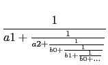
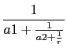

suivant: Transformer une fraction continue
monter: Les rationnels
précédent: Simplification d'un couple :
Table des matières
Index
Développement en fraction continue d'un réel : dfc
dfc a comme argument un nombre réel ou
fractionnaire ou décimal a et un entier n (ou un réel
epsilon).
dfc renvoie une liste représentant le développement en fractions
continues de a d'ordre n (ou de précision epsilon c'est à
dire le développement en fractions continues qui approche a ou
evalf(a) à moins de epsilon, par défaut epsilon est
égal à la valeur du epsilon définit dans la configuration du
cas à l'aide du menu
Cfg
 Configuration du CAS).
Configuration du CAS).
On peut aussi utiliser convert avec l'option confrac : dans ce cas
la valeur de epsilon est égal à la valeur du epsilon définit
dans la configuration du CAS à l'aide du menu
Cfg
Configuration du CAS (voir 6.22.25).
Remarques
Si le dernier élément de la liste résultat est une liste il représente
la période et si le dernier élément de la liste résultat n'est pas entier, il représente le reste r (
a = a0 + 1/.... + 1/an + 1/r).
Si on a dfc(a)=[a0,a1,a2,[b0,b1] cela veut dire que :
a = a0 + 
Si on a dfc(a)=[a0,a1,a2,r] cela veut dire que :
a = a0 + 
On tape :
dfc(sqrt(2),5)
On obtient :
[1,2,[2]]
On tape :
dfc(evalf(sqrt(2)),1e-9)
Ou :
dfc(sqrt(2),1e-9)
On obtient :
[1,2,2,2,2,2,2,2,2,2,2,2,2]
On tape :
convert(sqrt(2),confrac,'dev')
On obtient si dans la configuration du cas epsilon=1e-9 :
[1,2,2,2,2,2,2,2,2,2,2,2,2]
et dev contient [1,2,2,2,2,2,2,2,2,2,2,2,2]
On tape :
dfc(9976/6961,5)
On obtient :
[1,2,3,4,5,43/7]
En effet
on tape :
1+1/(2+1/(3+1/(4+1/(5+7/43))))
et on obtient :
9976/6961
On tape :
convert(9976/6961,confrac,'l')
On obtient si dans la configuration du cas epsilon=1e-9 :
[1,2,3,4,5,6,7]
et l contient [1,2,3,4,5,6,7]
On tape :
dfc(pi,5)
On obtient :
[3,7,15,1,292,(-113*pi+355)/(33102*pi-103993)]
On tape :
dfc(evalf(pi),5)
On obtient (si on travaille avec 12 chiffres significatifs) :
[3,7,15,1,292,1.57581843574]
On tape :
dfc(evalf(pi),1e-9)
Ou :
dfc(pi,1e-9)
Ou (si epsilon=1e-9 dans la configuration du cas) :
convert(pi,confrac,'ll')
On obtient :
[3,7,15,1,292]
suivant: Transformer une fraction continue
monter: Les rationnels
précédent: Simplification d'un couple :
Table des matières
Index
Documentation de giac écrite par Renée De Graeve